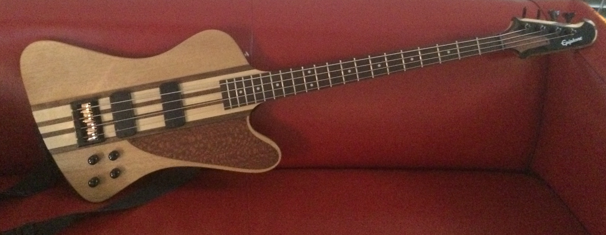
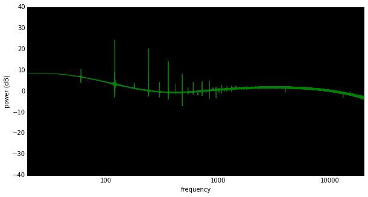
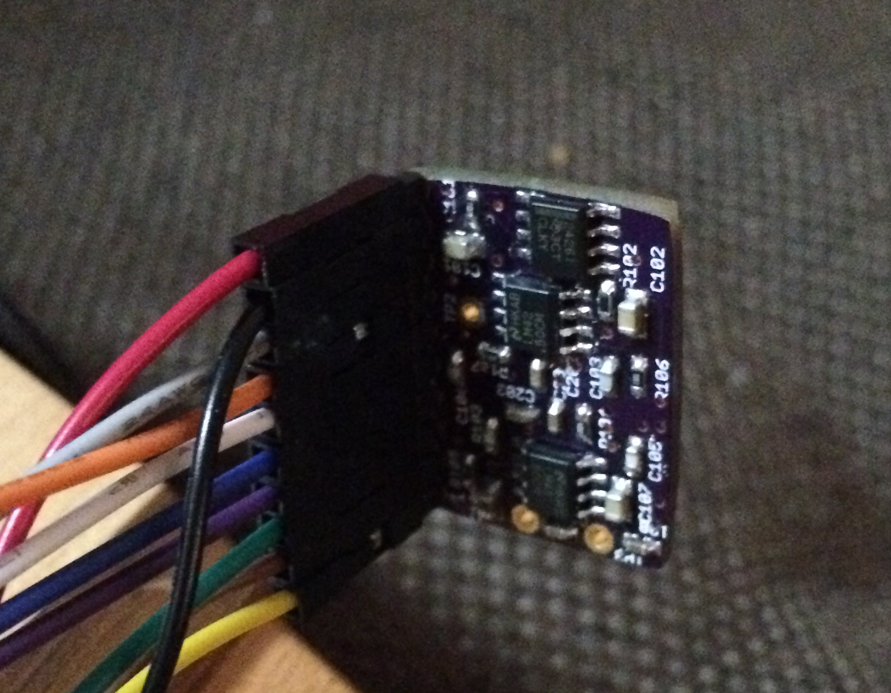
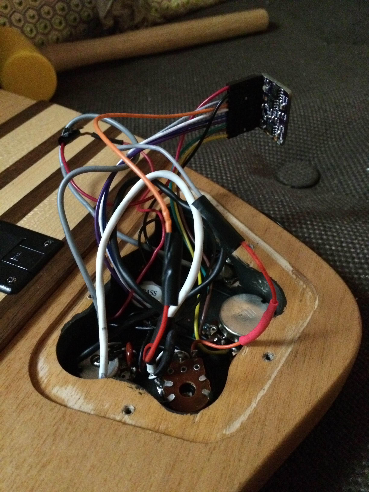

Some time ago, I bought an Epiphone Thunderbird Pro bass. I love the
look of this bass, kind of a mix of the Gibson
Thunderbird and the Aria
Pro II basses from the 80s.
There were a few things I didn't like about it though - first of all,
the pickguard was a bit ugly, so I replaced it with one lasercut from leopardwood.

Even after changing the pickguard, I wasn't crazy about the sound.
It's an active bass, meaning that it has a battery and a pre-amp
on-board to shape the sound. Sensing a fun project, I designed a small,
cheap pre-amp to replace the existing one. Like all of my electronic
designs, the pre-amp is open-source with a permissive license. You can
see more details on
github.
The design is heavily based on the first version of the pre-amp
included in the Music Man
Stingray, a design overseen by Leo Fender. The first version of the
StingRay pre-amp has only two controls, Bass and Treble (really, what
else do you need?).
My version is quite close to that original Music Man design in
frequency response, but uses modern components for lower power
consumption. In tests, my pre-amp uses about 1.5 milliamps, giving
approximately 400 hours of play time with a normal nine volt
battery.
If you're interested in seeing lots of graphs of the response, all
settings of interest are on the project's github
page, including simulations and real-world tests. My favorite
setting is both bass and treble boosted, giving a "scooped" frequency
response:

The build process was identical to my last few electronics projects,
with boards printed by the still-awesome OSH Park, and then built by me using
laser-cut stencils and a toaster oven. Here's a few pictures of the
completed board in the bass:


Installing the pre-amp was fairly easy, but I did have to wrap the
entire board in electrical tape to prevent it from rubbing against the
conductive walls of the electronics chamber and causing noise.